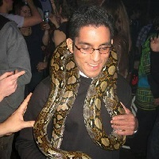

About Me

Hello World. I am originally from Buffalo, New York, but grew up and raised in Johnson County and Kansas City. As you may imagine, I do prefer the colder seasons over summer. I have a twin sister, who is the goody-goody of the nuclear family. Our family comes from India, where we do visit every few years or so. Anyway, I am a graduate of UMKC with a biology and chemistry major, although i like biology a tad bit more. Presently, I hope to become a full-stack web-developer, and perhaps combine the two knowledges together.
In off time, I like to relax, play the piano, socialize with closest friends, watch movies, play video games, and other things. I also love my dog more than anything else.